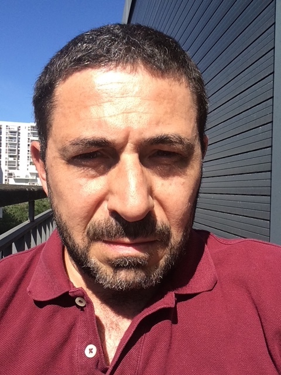

Welcome to my homepage. I am a research scientist at ONERA and part-time professor at CentraleSupélec. My research focuses on applied mathematics, scientific computing, uncertainty quantification, and engineering applications. I teach continuum mechanics, structural dynamics and acoustics, random mechanics, computational mechanics, and machine learning in engineering science. This website provides information about my research activities, publications, teaching, and ongoing projects.
2010 - Habilitation degree, Université Pierre-et-Marie-Curie (Paris VI), France
1999 - PhD, École Centrale Paris, France
1994 - MSc, École Centrale Paris, France
1993 - BS, MEng, École Centrale Lyon, France
2000-present: Research scientist, ONERA, France
2011-present: Professor (part-time), CentraleSupélec, France
2002-2011: Associate professor (part-time), École Centrale Paris, France
1994-1996: Consultant, Systra Group, South Korea
1994: Structural engineer, Sofrérail, France
2023-present: Expert, Commission des titres d'ingénieur, France
2022-present: Expert advisor, Blue Spirit Aero, France
2020-present: Board member (nominated),
Graduate school of mathematics, Université Paris-Saclay, France
2020-2026: Board member (nominated), Institute of aeronautics & astronautics, Université Paris-Saclay, France
2018-2023: Board member (nominated), GdR MécaWave, CNRS, France
2020-2022: Board member (elected), Social & economic committee, ONERA, France
2011-2014: Co-head, Graduate program in materials & structural dynamics, École Centrale Paris, France
2010-present: Expert, Ministry of higher education & research, France
Short bio in pdf file.
Journal papers, conference proceedings, book chapters and preprints.
Current and past research projects, collaborations and funded programs.
Éric M. Savin
ONERA, Computer Science Dept., 6 chemin de la Vauve aux Granges, 91120 Palaiseau, France
CentraleSupélec, Engineering Mechanics Dept., 3 rue Joliot-Curie, 91190 Gif-sur-Yvette, France
Email: eric.savin_at_centralesupelec.fr